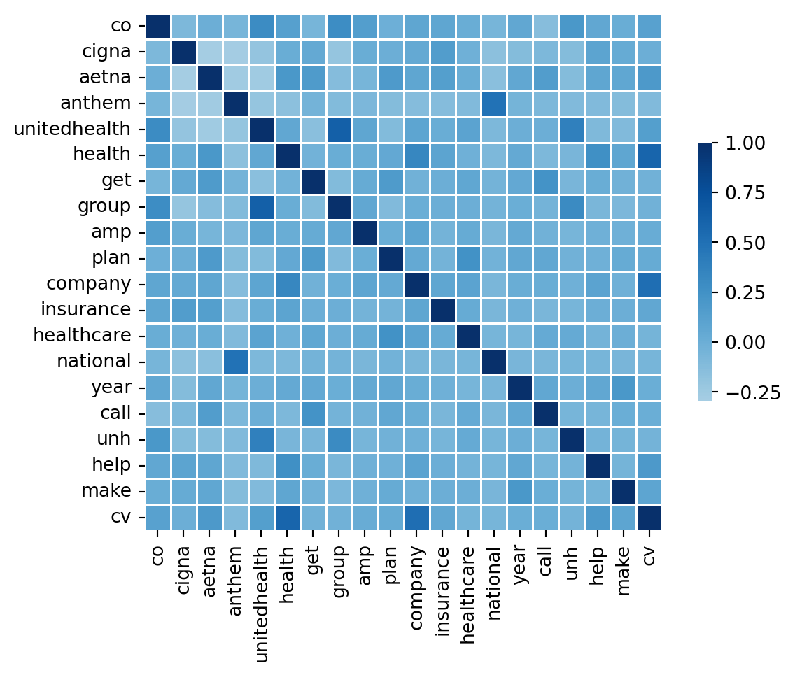
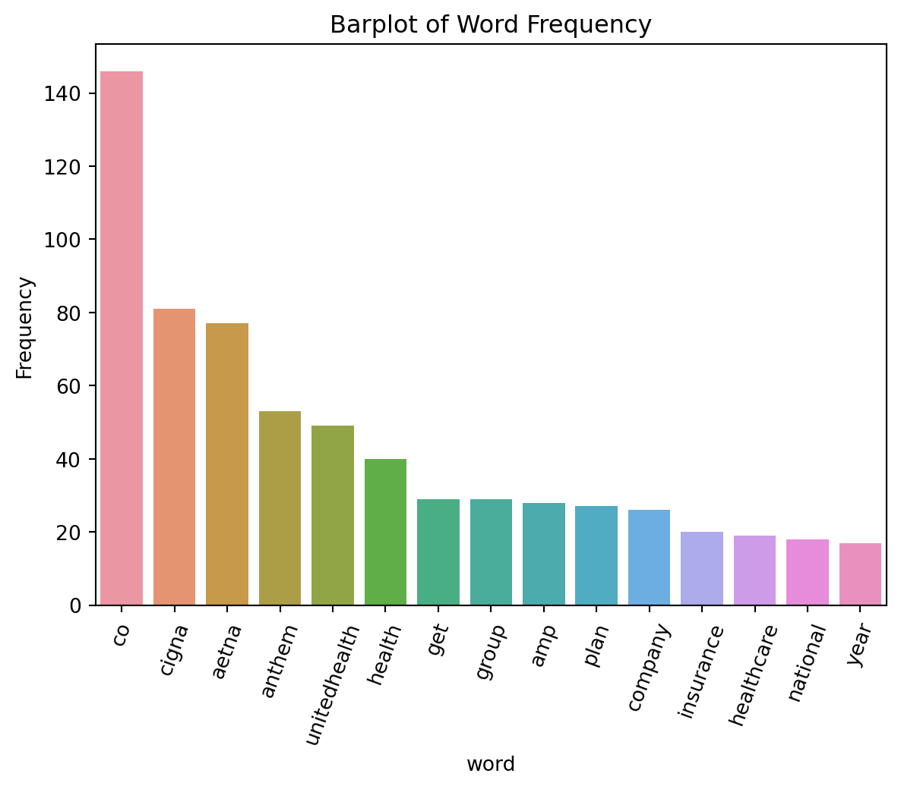
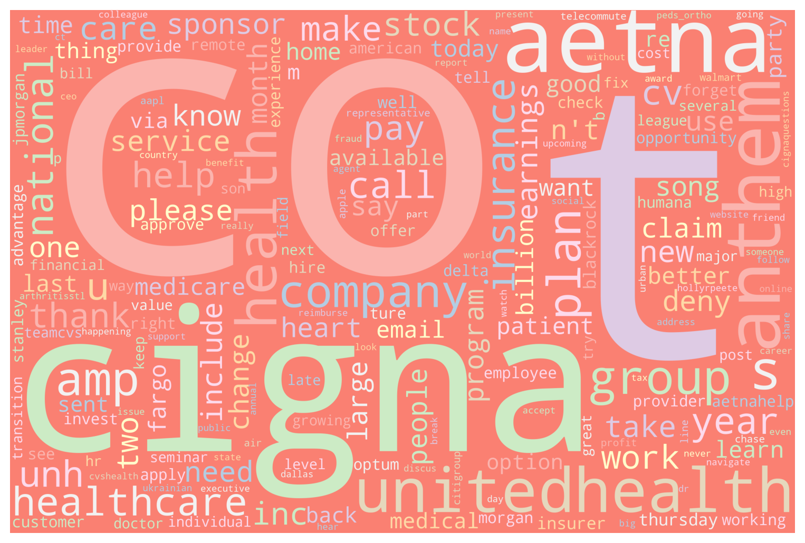

Code
import pandas as pd
from sklearn.feature_extraction.text import CountVectorizer
import numpy as np
import matplotlib.pyplot as plt
from wordcloud import WordCloud, STOPWORDS
import seaborn as snsimport pandas as pd
from sklearn.feature_extraction.text import CountVectorizer
import numpy as np
import matplotlib.pyplot as plt
from wordcloud import WordCloud, STOPWORDS
import seaborn as snsRemeber when we were cleaning the textual data, we tokenized each tweets and vectorized them into a dataframe. Also, I have sorted the tokenized words in the entire dataset by descending order. Here I printed out 20 highest frenquency word in a vectorized form.
health_insurance_df = pd.read_csv('/Users/liumingqian/anly-501-project-liumingqian0511/data/01-modified-data/text.csv')
vec = pd.read_csv('/Users/liumingqian/anly-501-project-liumingqian0511/data/01-modified-data/vec.csv')
words_freq_df = pd.read_csv('/Users/liumingqian/anly-501-project-liumingqian0511/data/01-modified-data/word_frequency_text.csv')corpus_str = ""
corpus = []
health_insurance_df['text'].apply(lambda x: corpus.append(x))
corpus_str = corpus_str.join(corpus)vec_20 = vec[words_freq_df['word'][:20]]
vec_20.head(10)| co | cigna | aetna | anthem | unitedhealth | health | get | group | amp | plan | company | insurance | healthcare | national | year | call | unh | help | make | cv | |
|---|---|---|---|---|---|---|---|---|---|---|---|---|---|---|---|---|---|---|---|---|
| 0 | 0 | 0 | 1 | 0 | 0 | 0 | 0 | 0 | 0 | 0 | 0 | 0 | 0 | 0 | 0 | 0 | 0 | 0 | 0 | 0 |
| 1 | 0 | 0 | 1 | 0 | 0 | 0 | 0 | 0 | 0 | 0 | 0 | 0 | 0 | 0 | 0 | 0 | 0 | 0 | 0 | 0 |
| 2 | 0 | 0 | 1 | 0 | 0 | 1 | 0 | 0 | 0 | 1 | 0 | 0 | 0 | 0 | 0 | 0 | 0 | 0 | 0 | 0 |
| 3 | 0 | 0 | 1 | 0 | 0 | 0 | 0 | 0 | 0 | 0 | 0 | 0 | 0 | 0 | 0 | 0 | 0 | 0 | 1 | 0 |
| 4 | 0 | 0 | 1 | 0 | 0 | 0 | 1 | 0 | 0 | 1 | 0 | 0 | 0 | 0 | 0 | 0 | 0 | 0 | 0 | 0 |
| 5 | 0 | 0 | 2 | 0 | 0 | 0 | 0 | 0 | 0 | 0 | 0 | 1 | 0 | 0 | 0 | 0 | 0 | 0 | 0 | 0 |
| 6 | 0 | 0 | 1 | 0 | 0 | 0 | 0 | 0 | 0 | 0 | 0 | 1 | 0 | 0 | 0 | 0 | 0 | 0 | 0 | 0 |
| 7 | 1 | 1 | 1 | 0 | 0 | 1 | 0 | 0 | 1 | 1 | 0 | 0 | 0 | 0 | 0 | 0 | 0 | 0 | 0 | 0 |
| 8 | 1 | 0 | 1 | 0 | 0 | 0 | 0 | 0 | 0 | 0 | 0 | 0 | 0 | 0 | 1 | 0 | 0 | 0 | 0 | 0 |
| 9 | 0 | 0 | 1 | 0 | 0 | 0 | 0 | 1 | 0 | 0 | 0 | 0 | 0 | 0 | 0 | 0 | 0 | 0 | 0 | 0 |
Correlation heatmaps are a type of plot that visualize the strength of relationships between numerical variables. I subset the vectorized dataframe by the top 20 frequent words and generated a correlation heatmap. The darker the square is, the stronger positive correlation exists between the corresponding two words.
corr=vec_20.corr()
# # Draw the heatmap with the mask and correct aspect ratio
sns.heatmap(corr, vmax=1, center=0, square=True, linewidths=.5, cbar_kws={"shrink": .5}, cmap='Blues')
plt.show()
Barplot
WordCloud
Both barplot and WordCloud are generated on the subsetted vectorized data. They visualize the top 20 frequent words in the data set. We can see the result from these two visualizing is just the same but in different presentation.
plot = sns.barplot(data=words_freq_df.iloc[:15,:],x='word',y='Frequency')
plt.xticks(rotation=70)
plot.set_title('Barplot of Word Frequency')
plt.show<function matplotlib.pyplot.show(close=None, block=None)>
wordcloud = WordCloud(
width = 3000,
height = 2000,
random_state=1,
background_color='salmon',
colormap='Pastel1',
collocations=False,
stopwords = STOPWORDS).generate(corpus_str)
plt.figure(figsize=(10, 8))
plt.imshow(wordcloud)
plt.axis("off")
plt.show()